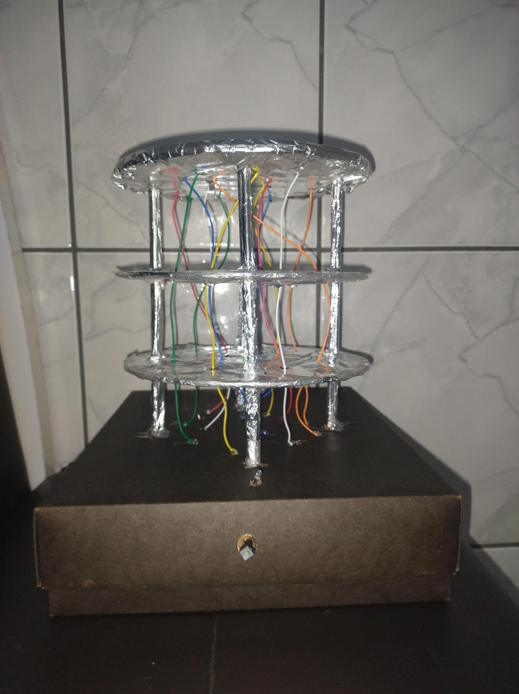
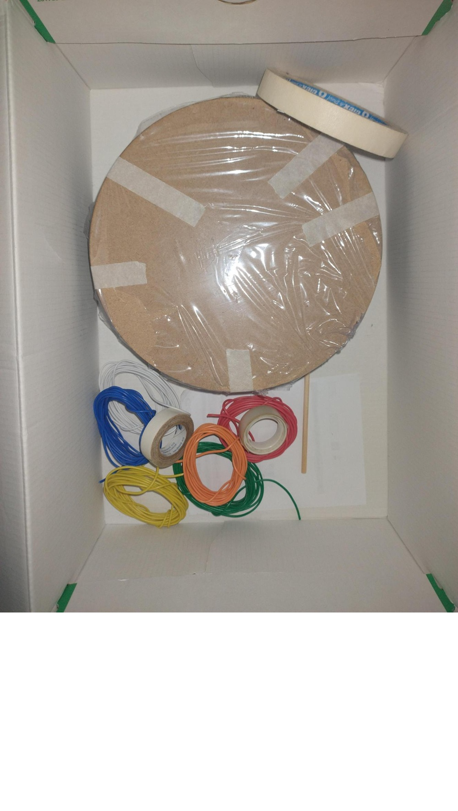
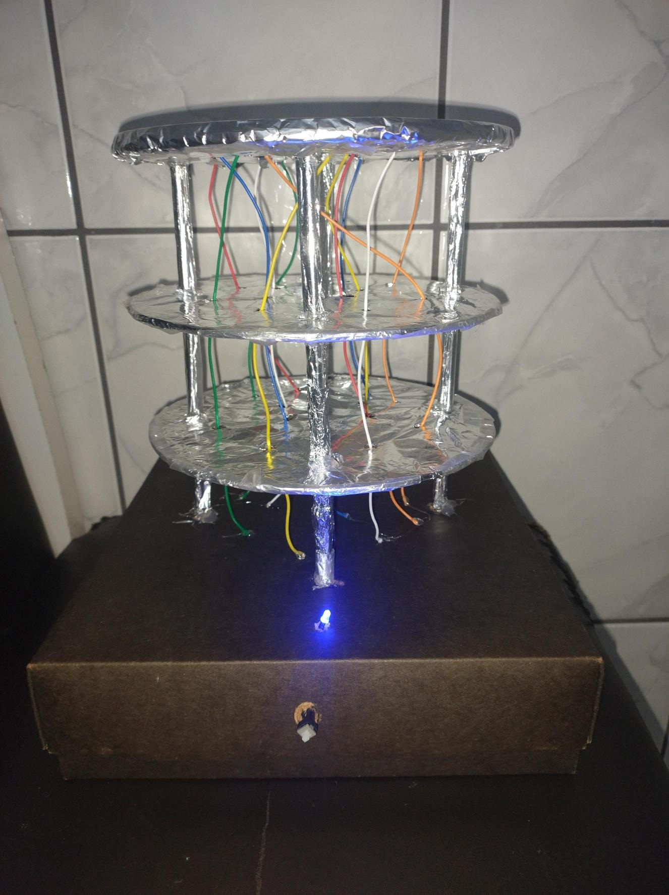

Visualizando o Qubit
Para tangibilizar o conceito abstrato de um qubit, criamos uma maquete física que representa seus estados. O LED central simboliza o qubit, alternando entre cores para representar a superposição e o colapso para um estado definido (0 ou 1) ao ser medido.



Construção e Sustentabilidade
Este projeto foi concebido com um forte compromisso com a sustentabilidade. A escolha de cada componente levou em consideração não apenas a funcionalidade, mas também o impacto ambiental e o potencial de reutilização.
Materiais Utilizados
- Estrutura: Plástico ABS reciclado
- Componentes: Arduino e LEDs de baixo consumo
- Fiação: Cobre com revestimento reciclável
- Base: Madeira de demolição reaproveitada
Potencial de Reciclabilidade
Ao final de seu ciclo de vida, a maquete pode ser facilmente desmontada. Os componentes eletrônicos podem ser reutilizados em novos projetos ou descartados em pontos de coleta de lixo eletrônico. A estrutura de plástico e a base de madeira são 100% recicláveis, fechando o ciclo e minimizando o impacto ambiental.